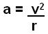

|
|||||||||||||||
| Actividad:
Desarrollando
programas en C No. 3. Unidad: Estatutos condicionales. |
|||||||||||||||
| Descripción | |||||||||||||||
 |
|
||||||||||||||
| Modalidad | |||||||||||||||
 |
|
||||||||||||||
| Objetivos de la actividad | |||||||||||||||
 |
|
||||||||||||||
| Instrucciones | |||||||||||||||
 |
Forma de trabajo:
Utiliza el siguiente
esquema como
apoyo para desarrollar tus soluciones:
 Ejercicio 1 Existen varias escalas para medir un terremoto, la escala de Richter representa la energía sísmica liberada en cada terremoto y se basa en el registro sismográfico. Utiliza la sentencia de control switch para desarrollar un programa en C que dada la magnitud en la escala de Richter de un terremoto, despliegue los efectos que este provoca, con base en la siguiente tabla:
casos de prueba:
Ejercicio 2 Una partícula que se mueve en una circunferencia de radio "r" con rapidez constante "v" experimenta una aceleración centrípeta (o radial), "a", debido a que la dirección de "v" cambia con el tiempo. La magnitud de "a" está dada por: 
Desarrolla un programa en C que despliegue el siguiente menú y que, de acuerdo a la opción seleccionada por el usuario, pida los datos necesarios y calcule el resultado correspondiente: Tema: Aceleración centrípeta a. Aceleración centrípeta de una partícula b. Velocidad de una partícula c. Radio de la circunferencia en que se mueve una partícula ¿Que desea calcular? Recuerda hacer las validaciones pertinentes. Incluye el algoritmo como comentario al inicio del programa. casos de prueba: opcion A) F(v,r)
opcion B) F(a,r)
opción C) F(v,a)
Genera un clasificador de al menos 10 categoría diferentes, este debe tener al menos 2 niveles de decisión usando switch. Este programa es tuyo, úsalo para hacer cosas interesante y retadoras no cosas fáciles. |
||||||||||||||
| Recursos | |||||||||||||||
 |
|
||||||||||||||
| Especificaciones de entrega | |||||||||||||||
 |
|
||||||||||||||
 |
|||||||||||||||
| DR© Tecnológico de Monterrey Campus Querétaro| Departamento de Desarrollo Académico| México, 2012 | |||||||||||||||